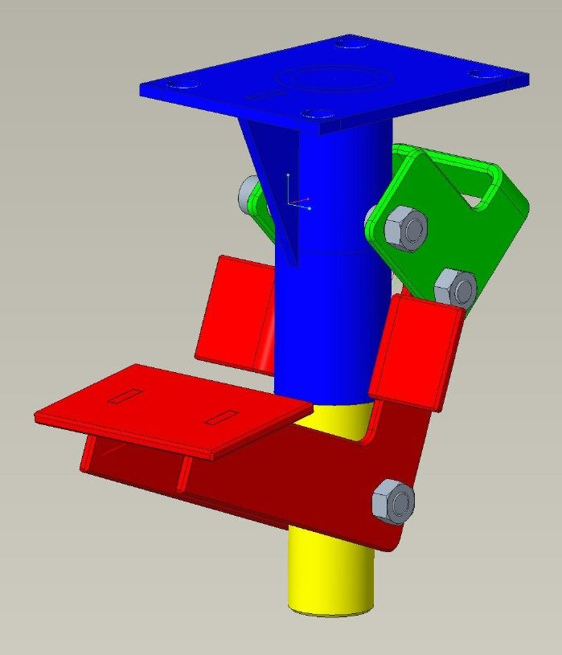
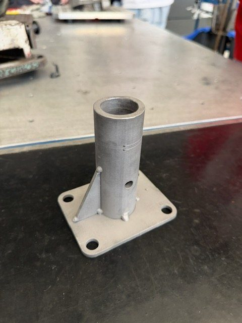
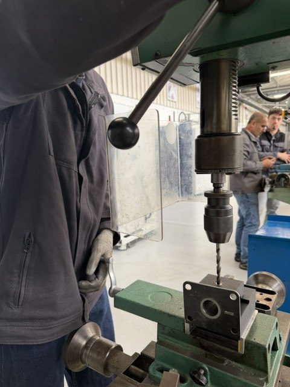
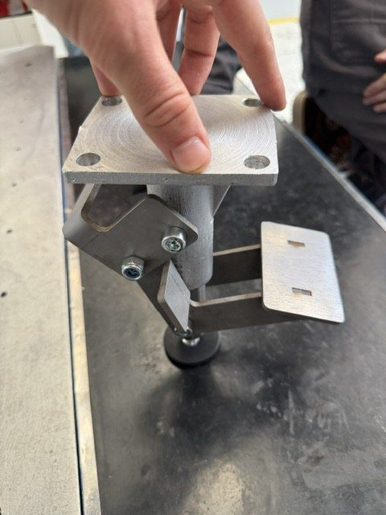
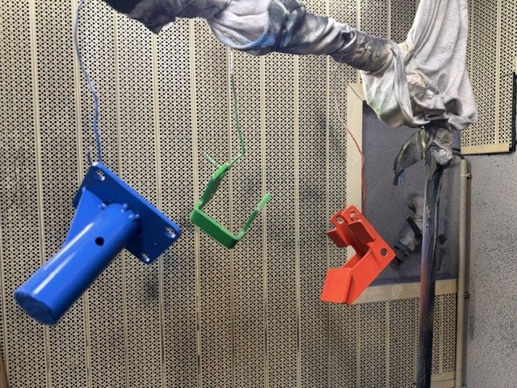
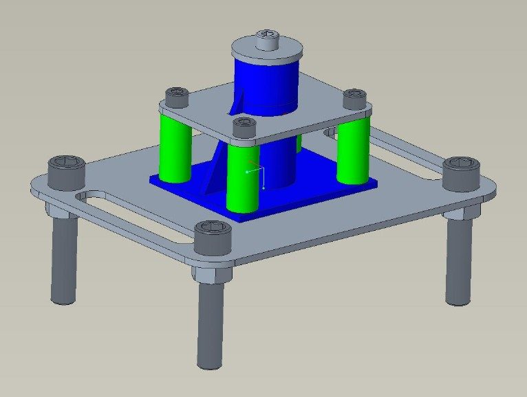
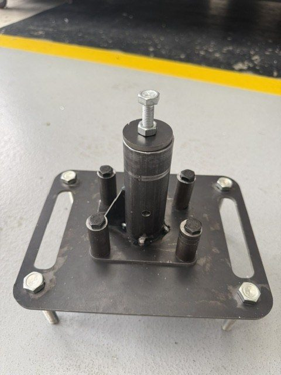
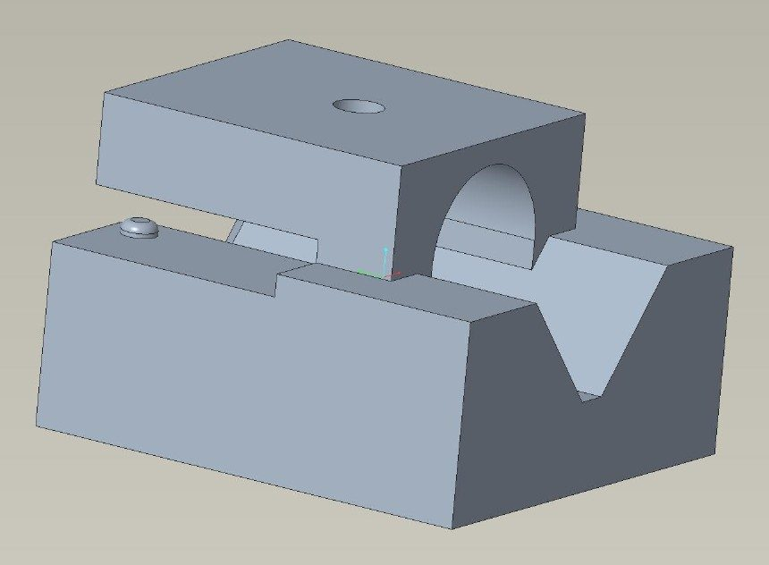
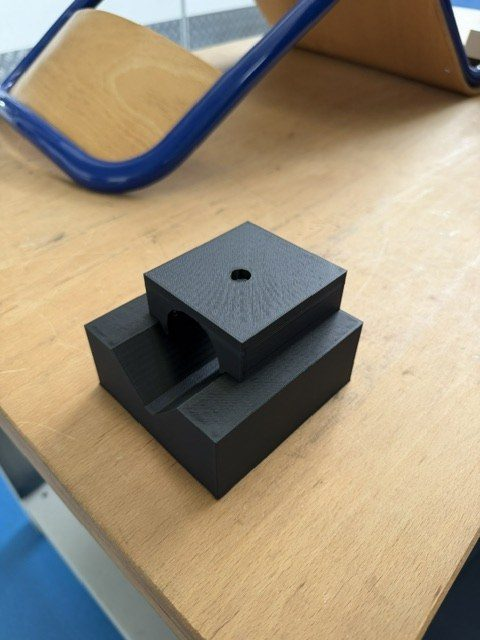
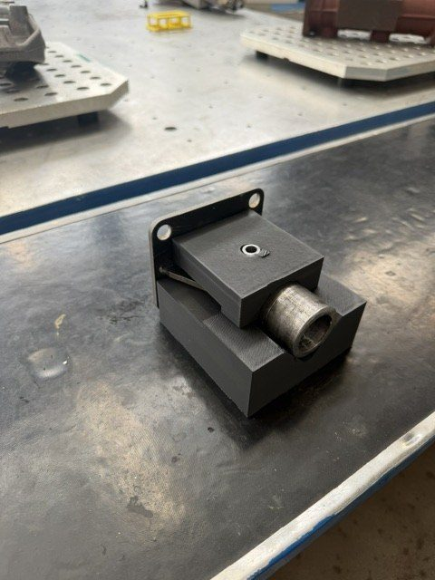

Conception et fabrication d'une genouillère
Un projet mené de bout en bout : de la conception jusqu'à la pièce peinte, en passant par la découpe, la soudure et le perçage.
Contexte
Un projet de 2ᵉ année à l'IUT d'Orléans
Le projet consistait à concevoir puis fabriquer une genouillère, une pièce articulée, du dessin jusqu'à la peinture. Elle est entièrement mécano-soudée : au lieu d'être taillée dans un bloc de métal, elle est construite en découpant des éléments puis en les soudant entre eux. C'est plus léger et bien moins coûteux en matière, mais chaque élément doit être placé avec précision avant la soudure.

Cahier des charges
Ce qui était attendu
- Concevoir une pièce entièrement mécano-soudée : assemblée par soudure, et non taillée dans la masse.
- Découper les éléments au jet d'eau, un procédé qui coupe le métal sans l'échauffer, donc sans modifier sa matière sur les bords.
- Assurer la précision de l'assemblage malgré les déformations provoquées par la chaleur de la soudure.
- Obtenir une finition soignée : sablage - un décapage par projection d'abrasif - puis peinture.
Ce que j'ai fait
De la tôle découpée à la pièce peinte
J'ai conçu la pièce, puis je l'ai fabriquée : découpe des éléments au jet d'eau, soudure, perçage sur perceuse à colonne, sablage et peinture.




Ce que j'ai fait
J'ai conçu et fabriqué l'outillage de soudure
Sur une pièce mécano-soudée, la chaleur fait bouger les éléments : s'ils ne sont pas tenus, les écarts se retrouvent sur la pièce finie. J'ai donc conçu un outillage qui maintient chaque élément en position pendant la soudure, puis je l'ai fabriqué.


Ce que j'ai fait
J'ai imprimé un vé en 3D pour percer juste
Posé à plat, un tube roule et le foret dérive dès l'amorce. J'ai conçu et imprimé en 3D un vé qui bloque le tube dans l'axe et le présente à la bonne hauteur sous la perceuse à colonne. Un outillage imprimé coûte quelques euros et quelques heures de machine.



Ce que j'en retiens
Concevoir, c'est aussi penser la fabrication
Fabriquer soi-même ce que l'on a dessiné change la façon de concevoir. Comment tenir la pièce, comment l'atteindre avec l'outil, dans quel ordre procéder : ces questions ne se posent pas de la même manière une fois devant la machine. C'est exactement ce que j'ai retrouvé ensuite en entreprise.